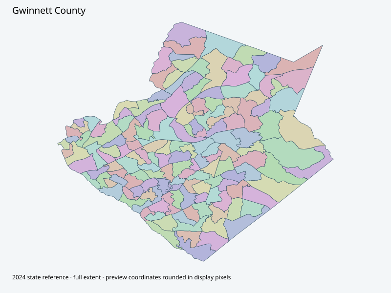

Map index · 156 explicit-FIPS 2024 map rows; 156 historical result identities. No approved crosswalk.

Full native coordinate/attribute extraction (gzip JSON) · Original complete statewide ZIP
County GIS portal and official help guide establish the portal chain. Complete 156-feature native geometry captured. Creation/edit clocks are data-maintenance clocks, not November boundary approval.
Full objects, county source IDs/clocks and attributes: all 2,701 native contexts. isVirtual:false and source label precinct do not prove physical geometry.
| Source name | Full source GUID | Breakdown ordinal | Source | Map status |
|---|---|---|---|---|
| 001 Harbins A | 01000000-d884-2e72-073c-08dcda4bbbbf | 0 | 2024NovGen--gwinnett-county-ga | unreviewed / no approved map join |
| 002 Rockbridge A | 01000000-d884-2e72-3187-08dcda4bbbc9 | 1 | 2024NovGen--gwinnett-county-ga | unreviewed / no approved map join |
| 003 Dacula | 01000000-d884-2e72-060e-08dcda4bbbd3 | 2 | 2024NovGen--gwinnett-county-ga | unreviewed / no approved map join |
| 004 Suwanee A | 01000000-d884-2e72-d44d-08dcda4bbbdc | 3 | 2024NovGen--gwinnett-county-ga | unreviewed / no approved map join |
| 005 Baycreek A | 01000000-d884-2e72-debb-08dcda4bbbe7 | 4 | 2024NovGen--gwinnett-county-ga | unreviewed / no approved map join |
| 006 Goodwins A | 01000000-d884-2e72-d19f-08dcda4bbbf1 | 5 | 2024NovGen--gwinnett-county-ga | unreviewed / no approved map join |
| 007 Duluth A | 01000000-d884-2e72-daf8-08dcda4bbbfb | 6 | 2024NovGen--gwinnett-county-ga | unreviewed / no approved map join |
| 008 Duncans A | 01000000-d884-2e72-f6be-08dcda4bbc07 | 7 | 2024NovGen--gwinnett-county-ga | unreviewed / no approved map join |
| 009 Pucketts A | 01000000-d884-2e72-7a41-08dcda4bbc16 | 8 | 2024NovGen--gwinnett-county-ga | unreviewed / no approved map join |
| 010 Cates A | 01000000-d884-2e72-682b-08dcda4bbc23 | 9 | 2024NovGen--gwinnett-county-ga | unreviewed / no approved map join |
| 011 Berkshire A | 01000000-d884-2e72-60e7-08dcda4bbc32 | 10 | 2024NovGen--gwinnett-county-ga | unreviewed / no approved map join |
| 012 Berkshire B | 01000000-d884-2e72-6e8e-08dcda4bbc3e | 11 | 2024NovGen--gwinnett-county-ga | unreviewed / no approved map join |
| 013 Duncans C | 01000000-d884-2e72-4809-08dcda4bbc48 | 12 | 2024NovGen--gwinnett-county-ga | unreviewed / no approved map join |
| 014 Garners A | 01000000-d884-2e72-f6bf-08dcda4bbc51 | 13 | 2024NovGen--gwinnett-county-ga | unreviewed / no approved map join |
| 015 Lawrenceville A | 01000000-d884-2e72-9236-08dcda4bbc5b | 14 | 2024NovGen--gwinnett-county-ga | unreviewed / no approved map join |
| 016 Lawrenceville B | 01000000-d884-2e72-31fb-08dcda4bbc65 | 15 | 2024NovGen--gwinnett-county-ga | unreviewed / no approved map join |
| 017 Martins A | 01000000-d884-2e72-c851-08dcda4bbc6e | 16 | 2024NovGen--gwinnett-county-ga | unreviewed / no approved map join |
| 018 Martins B | 01000000-d884-2e72-5044-08dcda4bbc78 | 17 | 2024NovGen--gwinnett-county-ga | unreviewed / no approved map join |
| 019 Martins C | 01000000-d884-2e72-cdbc-08dcda4bbc82 | 18 | 2024NovGen--gwinnett-county-ga | unreviewed / no approved map join |
| 020 Pinckneyville A | 01000000-d884-2e72-cbbf-08dcda4bbc8e | 19 | 2024NovGen--gwinnett-county-ga | unreviewed / no approved map join |
| 021 Pinckneyville B | 01000000-d884-2e72-cbbb-08dcda4bbc98 | 20 | 2024NovGen--gwinnett-county-ga | unreviewed / no approved map join |
| 022 Pinckneyville C | 01000000-d884-2e72-9848-08dcda4bbca2 | 21 | 2024NovGen--gwinnett-county-ga | unreviewed / no approved map join |
| 023 Pinckneyville D | 01000000-d884-2e72-2d9f-08dcda4bbcac | 22 | 2024NovGen--gwinnett-county-ga | unreviewed / no approved map join |
| 024 Sugar Hill A | 01000000-d884-2e72-e4d7-08dcda4bbcb5 | 23 | 2024NovGen--gwinnett-county-ga | unreviewed / no approved map join |
| 025 Sugar Hill B | 01000000-d884-2e72-77a9-08dcda4bbcbf | 24 | 2024NovGen--gwinnett-county-ga | unreviewed / no approved map join |
| 026 Hog Mountain A | 01000000-d884-2e72-5a92-08dcda4bbcc9 | 25 | 2024NovGen--gwinnett-county-ga | unreviewed / no approved map join |
| 027 Hog Mountain B | 01000000-d884-2e72-0667-08dcda4bbcd3 | 26 | 2024NovGen--gwinnett-county-ga | unreviewed / no approved map join |
| 028 Rockycreek A | 01000000-d884-2e72-c2c8-08dcda4bbcdc | 27 | 2024NovGen--gwinnett-county-ga | unreviewed / no approved map join |
| 029 Cates B | 01000000-d884-2e72-80a1-08dcda4bbce6 | 28 | 2024NovGen--gwinnett-county-ga | unreviewed / no approved map join |
| 030 Cates C | 01000000-d884-2e72-481d-08dcda4bbcf0 | 29 | 2024NovGen--gwinnett-county-ga | unreviewed / no approved map join |
| 031 Hog Mountain D | 01000000-d884-2e72-0392-08dcda4bbcfc | 30 | 2024NovGen--gwinnett-county-ga | unreviewed / no approved map join |
| 032 Berkshire D | 01000000-d884-2e72-92ee-08dcda4bbd06 | 31 | 2024NovGen--gwinnett-county-ga | unreviewed / no approved map join |
| 033 Berkshire E | 01000000-d884-2e72-c936-08dcda4bbd10 | 32 | 2024NovGen--gwinnett-county-ga | unreviewed / no approved map join |
| 034 Berkshire F | 01000000-d884-2e72-976e-08dcda4bbd1a | 33 | 2024NovGen--gwinnett-county-ga | unreviewed / no approved map join |
| 035 Cates D | 01000000-d884-2e72-c4e1-08dcda4bbd24 | 34 | 2024NovGen--gwinnett-county-ga | unreviewed / no approved map join |
| 036 Cates E | 01000000-d884-2e72-8ecb-08dcda4bbd2e | 35 | 2024NovGen--gwinnett-county-ga | unreviewed / no approved map join |
| 037 Pinckneyville E | 01000000-d884-2e72-5209-08dcda4bbd38 | 36 | 2024NovGen--gwinnett-county-ga | unreviewed / no approved map join |
| 038 Pinckneyville F | 01000000-d884-2e72-ddd2-08dcda4bbd41 | 37 | 2024NovGen--gwinnett-county-ga | unreviewed / no approved map join |
| 039 Duncans D | 01000000-d884-2e72-8971-08dcda4bbd4b | 38 | 2024NovGen--gwinnett-county-ga | unreviewed / no approved map join |
| 040 Pinckneyville H | 01000000-d884-2e72-1a95-08dcda4bbd59 | 39 | 2024NovGen--gwinnett-county-ga | unreviewed / no approved map join |
| 041 Baycreek B | 01000000-d884-2e72-85c4-08dcda4bbd69 | 40 | 2024NovGen--gwinnett-county-ga | unreviewed / no approved map join |
| 042 Lawrenceville C | 01000000-d884-2e72-3adc-08dcda4bbd7b | 41 | 2024NovGen--gwinnett-county-ga | unreviewed / no approved map join |
| 043 Martins D | 01000000-d884-2e72-5a3e-08dcda4bbd89 | 42 | 2024NovGen--gwinnett-county-ga | unreviewed / no approved map join |
| 044 Rockbridge B | 01000000-d884-2e72-09d3-08dcda4bbd94 | 43 | 2024NovGen--gwinnett-county-ga | unreviewed / no approved map join |
| 045 Garners B | 01000000-d884-2e72-064e-08dcda4bbd9e | 44 | 2024NovGen--gwinnett-county-ga | unreviewed / no approved map join |
| 046 Cates F | 01000000-d884-2e72-d187-08dcda4bbda7 | 45 | 2024NovGen--gwinnett-county-ga | unreviewed / no approved map join |
| 047 Cates G | 01000000-d884-2e72-ff87-08dcda4bbdb1 | 46 | 2024NovGen--gwinnett-county-ga | unreviewed / no approved map join |
| 048 Duluth B | 01000000-d884-2e72-89c9-08dcda4bbdbc | 47 | 2024NovGen--gwinnett-county-ga | unreviewed / no approved map join |
| 049 Garners C | 01000000-d884-2e72-819f-08dcda4bbdc6 | 48 | 2024NovGen--gwinnett-county-ga | unreviewed / no approved map join |
| 050 Pinckneyville I | 01000000-d884-2e72-5445-08dcda4bbdd0 | 49 | 2024NovGen--gwinnett-county-ga | unreviewed / no approved map join |
| 051 Pinckneyville J | 01000000-d884-2e72-66a9-08dcda4bbdda | 50 | 2024NovGen--gwinnett-county-ga | unreviewed / no approved map join |
| 052 Berkshire G | 01000000-d884-2e72-5f0a-08dcda4bbde4 | 51 | 2024NovGen--gwinnett-county-ga | unreviewed / no approved map join |
| 053 Cates H | 01000000-d884-2e72-90ae-08dcda4bbdee | 52 | 2024NovGen--gwinnett-county-ga | unreviewed / no approved map join |
| 054 Sugar Hill C | 01000000-d884-2e72-9f92-08dcda4bbdf8 | 53 | 2024NovGen--gwinnett-county-ga | unreviewed / no approved map join |
| 055 Sugar Hill D | 01000000-d884-2e72-4baf-08dcda4bbe05 | 54 | 2024NovGen--gwinnett-county-ga | unreviewed / no approved map join |
| 056 Duluth C | 01000000-d884-2e72-8eb6-08dcda4bbe10 | 55 | 2024NovGen--gwinnett-county-ga | unreviewed / no approved map join |
| 057 Duluth D | 01000000-d884-2e72-6c1a-08dcda4bbe1a | 56 | 2024NovGen--gwinnett-county-ga | unreviewed / no approved map join |
| 058 Pinckneyville K | 01000000-d884-2e72-7ae7-08dcda4bbe24 | 57 | 2024NovGen--gwinnett-county-ga | unreviewed / no approved map join |
| 059 Pinckneyville N | 01000000-d884-2e72-78fe-08dcda4bbe2e | 58 | 2024NovGen--gwinnett-county-ga | unreviewed / no approved map join |
| 060 Lawrenceville D | 01000000-d884-2e72-5332-08dcda4bbe38 | 59 | 2024NovGen--gwinnett-county-ga | unreviewed / no approved map join |
| 061 Lawrenceville E | 01000000-d884-2e72-132c-08dcda4bbe42 | 60 | 2024NovGen--gwinnett-county-ga | unreviewed / no approved map join |
| 062 Pinckneyville L | 01000000-d884-2e72-d8b6-08dcda4bbe4b | 61 | 2024NovGen--gwinnett-county-ga | unreviewed / no approved map join |
| 063 Pinckneyville M | 01000000-d884-2e72-4f29-08dcda4bbe56 | 62 | 2024NovGen--gwinnett-county-ga | unreviewed / no approved map join |
| 064 Garners D | 01000000-d884-2e72-f228-08dcda4bbe60 | 63 | 2024NovGen--gwinnett-county-ga | unreviewed / no approved map join |
| 065 Berkshire H | 01000000-d884-2e72-f341-08dcda4bbe6a | 64 | 2024NovGen--gwinnett-county-ga | unreviewed / no approved map join |
| 066 Pinckneyville O | 01000000-d884-2e72-a483-08dcda4bbe74 | 65 | 2024NovGen--gwinnett-county-ga | unreviewed / no approved map join |
| 067 Pucketts E | 01000000-d884-2e72-5e70-08dcda4bbe7e | 66 | 2024NovGen--gwinnett-county-ga | unreviewed / no approved map join |
| 068 Cates I | 01000000-d884-2e72-fdfe-08dcda4bbe8b | 67 | 2024NovGen--gwinnett-county-ga | unreviewed / no approved map join |
| 069 Cates J | 01000000-d884-2e72-aa5f-08dcda4bbe9b | 68 | 2024NovGen--gwinnett-county-ga | unreviewed / no approved map join |
| 070 Goodwins B | 01000000-d884-2e72-4416-08dcda4bbea6 | 69 | 2024NovGen--gwinnett-county-ga | unreviewed / no approved map join |
| 071 Lawrenceville F | 01000000-d884-2e72-70ee-08dcda4bbeb0 | 70 | 2024NovGen--gwinnett-county-ga | unreviewed / no approved map join |
| 072 Martins E | 01000000-d884-2e72-e004-08dcda4bbeba | 71 | 2024NovGen--gwinnett-county-ga | unreviewed / no approved map join |
| 073 Pinckneyville P | 01000000-d884-2e72-0604-08dcda4bbec6 | 72 | 2024NovGen--gwinnett-county-ga | unreviewed / no approved map join |
| 074 Pinckneyville Q | 01000000-d884-2e72-5537-08dcda4bbed2 | 73 | 2024NovGen--gwinnett-county-ga | unreviewed / no approved map join |
| 075 Rockbridge C | 01000000-d884-2e72-ddac-08dcda4bbedc | 74 | 2024NovGen--gwinnett-county-ga | unreviewed / no approved map join |
| 076 Rockbridge D | 01000000-d884-2e72-a42c-08dcda4bbee7 | 75 | 2024NovGen--gwinnett-county-ga | unreviewed / no approved map join |
| 077 Goodwins C | 01000000-d884-2e72-c2ee-08dcda4bbef1 | 76 | 2024NovGen--gwinnett-county-ga | unreviewed / no approved map join |
| 078 Baycreek K | 01000000-d884-2e72-7229-08dcda4bbefc | 77 | 2024NovGen--gwinnett-county-ga | unreviewed / no approved map join |
| 079 Cates K | 01000000-d884-2e72-8306-08dcda4bbf06 | 78 | 2024NovGen--gwinnett-county-ga | unreviewed / no approved map join |
| 080 Baycreek C | 01000000-d884-2e72-f809-08dcda4bbf10 | 79 | 2024NovGen--gwinnett-county-ga | unreviewed / no approved map join |
| 081 Cates L | 01000000-d884-2e72-2a38-08dcda4bbf1b | 80 | 2024NovGen--gwinnett-county-ga | unreviewed / no approved map join |
| 082 Duluth E | 01000000-d884-2e72-052b-08dcda4bbf25 | 81 | 2024NovGen--gwinnett-county-ga | unreviewed / no approved map join |
| 083 Goodwins D | 01000000-d884-2e72-a8b8-08dcda4bbf2f | 82 | 2024NovGen--gwinnett-county-ga | unreviewed / no approved map join |
| 084 Lawrenceville G | 01000000-d884-2e72-b128-08dcda4bbf39 | 83 | 2024NovGen--gwinnett-county-ga | unreviewed / no approved map join |
| 085 Lawrenceville H | 01000000-d884-2e72-9fd1-08dcda4bbf43 | 84 | 2024NovGen--gwinnett-county-ga | unreviewed / no approved map join |
| 086 Martins F | 01000000-d884-2e72-7770-08dcda4bbf4d | 85 | 2024NovGen--gwinnett-county-ga | unreviewed / no approved map join |
| 087 Pinckneyville S | 01000000-d884-2e72-696c-08dcda4bbf57 | 86 | 2024NovGen--gwinnett-county-ga | unreviewed / no approved map join |
| 088 Rockbridge E | 01000000-d884-2e72-500f-08dcda4bbf61 | 87 | 2024NovGen--gwinnett-county-ga | unreviewed / no approved map join |
| 089 Sugar Hill E | 01000000-d884-2e72-05bd-08dcda4bbf6b | 88 | 2024NovGen--gwinnett-county-ga | unreviewed / no approved map join |
| 090 Lawrenceville I | 01000000-d884-2e72-c23f-08dcda4bbf74 | 89 | 2024NovGen--gwinnett-county-ga | unreviewed / no approved map join |
| 091 Baycreek D | 01000000-d884-2e72-8d43-08dcda4bbf7e | 90 | 2024NovGen--gwinnett-county-ga | unreviewed / no approved map join |
| 092 Berkshire J | 01000000-d884-2e72-c949-08dcda4bbf8c | 91 | 2024NovGen--gwinnett-county-ga | unreviewed / no approved map join |
| 093 Cates M | 01000000-d884-2e72-1061-08dcda4bbf97 | 92 | 2024NovGen--gwinnett-county-ga | unreviewed / no approved map join |
| 094 Cates N | 01000000-d884-2e72-0fda-08dcda4bbfa1 | 93 | 2024NovGen--gwinnett-county-ga | unreviewed / no approved map join |
| 095 Duluth F | 01000000-d884-2e72-2f67-08dcda4bbfab | 94 | 2024NovGen--gwinnett-county-ga | unreviewed / no approved map join |
| 096 Duluth G | 01000000-d884-2e72-889d-08dcda4bbfb5 | 95 | 2024NovGen--gwinnett-county-ga | unreviewed / no approved map join |
| 097 Goodwins E | 01000000-d884-2e72-92d8-08dcda4bbfc1 | 96 | 2024NovGen--gwinnett-county-ga | unreviewed / no approved map join |
| 098 Goodwins F | 01000000-d884-2e72-f65d-08dcda4bbfcd | 97 | 2024NovGen--gwinnett-county-ga | unreviewed / no approved map join |
| 099 Pinckneyville T | 01000000-d884-2e72-1d4c-08dcda4bbfd9 | 98 | 2024NovGen--gwinnett-county-ga | unreviewed / no approved map join |
| 100 Suwanee B | 01000000-d884-2e72-4640-08dcda4bbfe3 | 99 | 2024NovGen--gwinnett-county-ga | unreviewed / no approved map join |
| 101 Pinckneyville U | 01000000-d884-2e72-87c9-08dcda4bbfed | 100 | 2024NovGen--gwinnett-county-ga | unreviewed / no approved map join |
| 102 Pucketts B | 01000000-d884-2e72-07ab-08dcda4bbff8 | 101 | 2024NovGen--gwinnett-county-ga | unreviewed / no approved map join |
| 103 Berkshire L | 01000000-d884-2e72-2208-08dcda4bc002 | 102 | 2024NovGen--gwinnett-county-ga | unreviewed / no approved map join |
| 104 Rockbridge F | 01000000-d884-2e72-0da2-08dcda4bc00d | 103 | 2024NovGen--gwinnett-county-ga | unreviewed / no approved map join |
| 105 Sugar Hill F | 01000000-d884-2e72-8fde-08dcda4bc017 | 104 | 2024NovGen--gwinnett-county-ga | unreviewed / no approved map join |
| 106 Suwanee C | 01000000-d884-2e72-35fe-08dcda4bc022 | 105 | 2024NovGen--gwinnett-county-ga | unreviewed / no approved map join |
| 107 Cates O | 01000000-d884-2e72-b7ed-08dcda4bc02c | 106 | 2024NovGen--gwinnett-county-ga | unreviewed / no approved map join |
| 108 Baycreek E | 01000000-d884-2e72-85e4-08dcda4bc037 | 107 | 2024NovGen--gwinnett-county-ga | unreviewed / no approved map join |
| 109 Berkshire M | 01000000-d884-2e72-d39d-08dcda4bc041 | 108 | 2024NovGen--gwinnett-county-ga | unreviewed / no approved map join |
| 110 Martins G | 01000000-d884-2e72-dd6a-08dcda4bc04b | 109 | 2024NovGen--gwinnett-county-ga | unreviewed / no approved map join |
| 111 Duluth H | 01000000-d884-2e72-c873-08dcda4bc055 | 110 | 2024NovGen--gwinnett-county-ga | unreviewed / no approved map join |
| 112 Berkshire N | 01000000-d884-2e72-dee2-08dcda4bc05f | 111 | 2024NovGen--gwinnett-county-ga | unreviewed / no approved map join |
| 113 Pinckneyville V | 01000000-d884-2e72-f454-08dcda4bc069 | 112 | 2024NovGen--gwinnett-county-ga | unreviewed / no approved map join |
| 114 Pinckneyville W | 01000000-d884-2e72-f584-08dcda4bc073 | 113 | 2024NovGen--gwinnett-county-ga | unreviewed / no approved map join |
| 115 Martins H | 01000000-d884-2e72-1f9c-08dcda4bc07e | 114 | 2024NovGen--gwinnett-county-ga | unreviewed / no approved map join |
| 116 Martins I | 01000000-d884-2e72-2090-08dcda4bc088 | 115 | 2024NovGen--gwinnett-county-ga | unreviewed / no approved map join |
| 117 Martins J | 01000000-d884-2e72-5aff-08dcda4bc092 | 116 | 2024NovGen--gwinnett-county-ga | unreviewed / no approved map join |
| 118 Garners F | 01000000-d884-2e72-7772-08dcda4bc09c | 117 | 2024NovGen--gwinnett-county-ga | unreviewed / no approved map join |
| 119 Berkshire O | 01000000-d884-2e72-b4a6-08dcda4bc0a6 | 118 | 2024NovGen--gwinnett-county-ga | unreviewed / no approved map join |
| 120 Berkshire P | 01000000-d884-2e72-bf0e-08dcda4bc0b0 | 119 | 2024NovGen--gwinnett-county-ga | unreviewed / no approved map join |
| 121 Pinckneyville X | 01000000-d884-2e72-bfeb-08dcda4bc0ba | 120 | 2024NovGen--gwinnett-county-ga | unreviewed / no approved map join |
| 122 Rockbridge G | 01000000-d884-2e72-cb78-08dcda4bc0c4 | 121 | 2024NovGen--gwinnett-county-ga | unreviewed / no approved map join |
| 123 Pinckneyville Y | 01000000-d884-2e72-e203-08dcda4bc0ce | 122 | 2024NovGen--gwinnett-county-ga | unreviewed / no approved map join |
| 124 Goodwins G | 01000000-d884-2e72-2761-08dcda4bc0d9 | 123 | 2024NovGen--gwinnett-county-ga | unreviewed / no approved map join |
| 125 Pinckneyville Z | 01000000-d884-2e72-7791-08dcda4bc0e3 | 124 | 2024NovGen--gwinnett-county-ga | unreviewed / no approved map join |
| 126 Pinckneyville A1 | 01000000-d884-2e72-3836-08dcda4bc0ee | 125 | 2024NovGen--gwinnett-county-ga | unreviewed / no approved map join |
| 127 Lawrenceville J | 01000000-d884-2e72-9c43-08dcda4bc0f8 | 126 | 2024NovGen--gwinnett-county-ga | unreviewed / no approved map join |
| 128 Goodwins H | 01000000-d884-2e72-d2a6-08dcda4bc102 | 127 | 2024NovGen--gwinnett-county-ga | unreviewed / no approved map join |
| 129 Duncans B | 01000000-d884-2e72-e980-08dcda4bc10c | 128 | 2024NovGen--gwinnett-county-ga | unreviewed / no approved map join |
| 130 Suwanee D | 01000000-d884-2e72-ffb2-08dcda4bc116 | 129 | 2024NovGen--gwinnett-county-ga | unreviewed / no approved map join |
| 131 Suwanee E | 01000000-d884-2e72-5250-08dcda4bc121 | 130 | 2024NovGen--gwinnett-county-ga | unreviewed / no approved map join |
| 132 Lawrenceville K | 01000000-d884-2e72-db88-08dcda4bc12b | 131 | 2024NovGen--gwinnett-county-ga | unreviewed / no approved map join |
| 133 Harbins B | 01000000-d884-2e72-bf3a-08dcda4bc135 | 132 | 2024NovGen--gwinnett-county-ga | unreviewed / no approved map join |
| 134 Baycreek F | 01000000-d884-2e72-b3bc-08dcda4bc13f | 133 | 2024NovGen--gwinnett-county-ga | unreviewed / no approved map join |
| 135 Pucketts C | 01000000-d884-2e72-c9a7-08dcda4bc149 | 134 | 2024NovGen--gwinnett-county-ga | unreviewed / no approved map join |
| 136 Hog Mountain C | 01000000-d884-2e72-f61e-08dcda4bc156 | 135 | 2024NovGen--gwinnett-county-ga | unreviewed / no approved map join |
| 137 Rockycreek B | 01000000-d884-2e72-0ee1-08dcda4bc161 | 136 | 2024NovGen--gwinnett-county-ga | unreviewed / no approved map join |
| 138 Duluth I | 01000000-d884-2e72-0d27-08dcda4bc16b | 137 | 2024NovGen--gwinnett-county-ga | unreviewed / no approved map join |
| 139 Martins K | 01000000-d884-2e72-d2ff-08dcda4bc177 | 138 | 2024NovGen--gwinnett-county-ga | unreviewed / no approved map join |
| 140 Suwanee H | 01000000-d884-2e72-cfb9-08dcda4bc181 | 139 | 2024NovGen--gwinnett-county-ga | unreviewed / no approved map join |
| 141 Sugar Hill G | 01000000-d884-2e72-c4a5-08dcda4bc18b | 140 | 2024NovGen--gwinnett-county-ga | unreviewed / no approved map join |
| 142 Suwanee F | 01000000-d884-2e72-a73e-08dcda4bc195 | 141 | 2024NovGen--gwinnett-county-ga | unreviewed / no approved map join |
| 143 Lawrenceville L | 01000000-d884-2e72-5921-08dcda4bc19f | 142 | 2024NovGen--gwinnett-county-ga | unreviewed / no approved map join |
| 144 Lawrenceville M | 01000000-d884-2e72-067a-08dcda4bc1a9 | 143 | 2024NovGen--gwinnett-county-ga | unreviewed / no approved map join |
| 145 Baycreek G | 01000000-d884-2e72-2460-08dcda4bc1b9 | 144 | 2024NovGen--gwinnett-county-ga | unreviewed / no approved map join |
| 146 Baycreek H | 01000000-d884-2e72-6a28-08dcda4bc1c4 | 145 | 2024NovGen--gwinnett-county-ga | unreviewed / no approved map join |
| 147 Baycreek I | 01000000-d884-2e72-a8f2-08dcda4bc1ce | 146 | 2024NovGen--gwinnett-county-ga | unreviewed / no approved map join |
| 148 Berkshire Q | 01000000-d884-2e72-c237-08dcda4bc1d8 | 147 | 2024NovGen--gwinnett-county-ga | unreviewed / no approved map join |
| 149 Goodwins I | 01000000-d884-2e72-b886-08dcda4bc1e2 | 148 | 2024NovGen--gwinnett-county-ga | unreviewed / no approved map join |
| 150 Duluth K | 01000000-d884-2e72-4a03-08dcda4bc1ef | 149 | 2024NovGen--gwinnett-county-ga | unreviewed / no approved map join |
| 151 Harbins C | 01000000-d884-2e72-bffb-08dcda4bc1fa | 150 | 2024NovGen--gwinnett-county-ga | unreviewed / no approved map join |
| 152 Rockycreek C | 01000000-d884-2e72-03ba-08dcda4bc205 | 151 | 2024NovGen--gwinnett-county-ga | unreviewed / no approved map join |
| 153 Lawrenceville N | 01000000-d884-2e72-e869-08dcda4bc20e | 152 | 2024NovGen--gwinnett-county-ga | unreviewed / no approved map join |
| 154 Pucketts D | 01000000-d884-2e72-319d-08dcda4bc219 | 153 | 2024NovGen--gwinnett-county-ga | unreviewed / no approved map join |
| 155 Suwanee G | 01000000-d884-2e72-d01e-08dcda4bc226 | 154 | 2024NovGen--gwinnett-county-ga | unreviewed / no approved map join |
| 156 Baycreek J | 01000000-d884-2e72-8474-08dcda4bc232 | 155 | 2024NovGen--gwinnett-county-ga | unreviewed / no approved map join |
| Original row ordinal | DISTRICT | PRECINCT_I | PRECINCT_N |
|---|---|---|---|
| 206 | 13539 | 39 | DUNCANS D |
| 526 | 1351 | 1 | HARBINS A |
| 527 | 135151 | 151 | HARBINS C |
| 530 | 135133 | 133 | HARBINS B |
| 531 | 13528 | 28 | ROCKYCREEK A |
| 532 | 135129 | 129 | DUNCANS B |
| 551 | 13564 | 64 | GARNERS D |
| 556 | 135122 | 122 | ROCKBRIDGE G |
| 557 | 1352 | 2 | ROCKBRIDGE A |
| 558 | 13575 | 75 | ROCKBRIDGE C |
| 575 | 135104 | 104 | ROCKBRIDGE F |
| 576 | 13576 | 76 | ROCKBRIDGE D |
| 578 | 13552 | 52 | BERKSHIRE G |
| 579 | 135118 | 118 | GARNERS F |
| 580 | 135112 | 112 | BERKSHIRE N |
| 581 | 13533 | 33 | BERKSHIRE E |
| 582 | 13592 | 92 | BERKSHIRE J |
| 583 | 13549 | 49 | GARNERS C |
| 584 | 13514 | 14 | GARNERS A |
| 585 | 13545 | 45 | GARNERS B |
| 586 | 13532 | 32 | BERKSHIRE D |
| 587 | 13511 | 11 | BERKSHIRE A |
| 588 | 135120 | 120 | BERKSHIRE P |
| 589 | 135109 | 109 | BERKSHIRE M |
| 590 | 13574 | 74 | PINCKNEYVILLE Q |
| 591 | 135103 | 103 | BERKSHIRE L |
| 592 | 13586 | 86 | MARTINS F |
| 593 | 13534 | 34 | BERKSHIRE F |
| 594 | 135119 | 119 | BERKSHIRE O |
| 595 | 13519 | 19 | MARTINS C |
| 596 | 13543 | 43 | MARTINS D |
| 597 | 135116 | 116 | MARTINS I |
| 598 | 135117 | 117 | MARTINS J |
| 599 | 13588 | 88 | ROCKBRIDGE E |
| 600 | 13569 | 69 | CATES J |
| 601 | 13536 | 36 | CATES E |
| 602 | 135107 | 107 | CATES O |
| 603 | 13523 | 23 | PINCKNEYVILLE D |
| 604 | 13558 | 58 | PINCKNEYVILLE K |
| 605 | 13550 | 50 | PINCKNEYVILLE I |
| 607 | 135101 | 101 | PINCKNEYVILLE U |
| 609 | 13573 | 73 | PINCKNEYVILLE P |
| 610 | 135126 | 126 | PINCKNEYVILLE A1 |
| 616 | 13522 | 22 | PINCKNEYVILLE C |
| 617 | 135125 | 125 | PINCKNEYVILLE Z |
| 618 | 13562 | 62 | PINCKNEYVILLE L |
| 620 | 13563 | 63 | PINCKNEYVILLE M |
| 632 | 135121 | 121 | PINCKNEYVILLE X |
| 633 | 13540 | 40 | PINCKNEYVILLE H |
| 635 | 13599 | 99 | PINCKNEYVILLE T |
| 636 | 13557 | 57 | DULUTH D |
| 637 | 13582 | 82 | DULUTH E |
| 638 | 13556 | 56 | DULUTH C |
| 649 | 135111 | 111 | DULUTH H |
| 2035 | 13560 | 60 | LAWRENCEVILLE D |
| 2036 | 13542 | 42 | LAWRENCEVILLE C |
| 2037 | 13570 | 70 | GOODWINS B |
| 2038 | 13526 | 26 | HOG MOUNTAIN A |
| 2039 | 13531 | 31 | HOG MOUNTAIN D |
| 2040 | 135136 | 136 | HOG MOUNTAIN C |
| 2041 | 13567 | 67 | PUCKETTS E |
| 2042 | 13571 | 71 | LAWRENCEVILLE F |
| 2043 | 135144 | 144 | LAWRENCEVILLE M |
| 2044 | 13527 | 27 | HOG MOUNTAIN B |
| 2045 | 1353 | 3 | DACULA |
| 2046 | 135152 | 152 | ROCKYCREEK C |
| 2047 | 135137 | 137 | ROCKYCREEK B |
| 2048 | 135154 | 154 | PUCKETTS D |
| 2049 | 1358 | 8 | DUNCANS A |
| 2050 | 13513 | 13 | DUNCANS C |
| 2099 | 13535 | 35 | CATES D |
| 2100 | 13544 | 44 | ROCKBRIDGE B |
| 2101 | 13553 | 53 | CATES H |
| 2102 | 13546 | 46 | CATES F |
| 2103 | 13547 | 47 | CATES G |
| 2104 | 13529 | 29 | CATES B |
| 2105 | 13579 | 79 | CATES K |
| 2106 | 135139 | 139 | MARTINS K |
| 2107 | 135115 | 115 | MARTINS H |
| 2108 | 13568 | 68 | CATES I |
| 2109 | 13593 | 93 | CATES M |
| 2110 | 135127 | 127 | LAWRENCEVILLE J |
| 2111 | 13518 | 18 | MARTINS B |
| 2112 | 13584 | 84 | LAWRENCEVILLE G |
| 2113 | 135150 | 150 | DULUTH K |
| 2114 | 13548 | 48 | DULUTH B |
| 2115 | 13596 | 96 | DULUTH G |
| 2116 | 13572 | 72 | MARTINS E |
| 2117 | 13595 | 95 | DULUTH F |
| 2118 | 135138 | 138 | DULUTH I |
| 2120 | 1357 | 7 | DULUTH A |
| 2123 | 135155 | 155 | SUWANEE G |
| 2124 | 135140 | 140 | SUWANEE H |
| 2125 | 13517 | 17 | MARTINS A |
| 2126 | 13577 | 77 | GOODWINS C |
| 2127 | 13597 | 97 | GOODWINS E |
| 2128 | 135110 | 110 | MARTINS G |
| 2129 | 135124 | 124 | GOODWINS G |
| 2130 | 135149 | 149 | GOODWINS I |
| 2131 | 1356 | 6 | GOODWINS A |
| 2132 | 135128 | 128 | GOODWINS H |
| 2133 | 13583 | 83 | GOODWINS D |
| 2134 | 135106 | 106 | SUWANEE C |
| 2135 | 135131 | 131 | SUWANEE E |
| 2136 | 1354 | 4 | SUWANEE A |
| 2137 | 13598 | 98 | GOODWINS F |
| 2138 | 135142 | 142 | SUWANEE F |
| 2139 | 135100 | 100 | SUWANEE B |
| 2140 | 13530 | 30 | CATES C |
| 2141 | 13510 | 10 | CATES A |
| 2142 | 13581 | 81 | CATES L |
| 2143 | 135156 | 156 | BAYCREEK J |
| 2144 | 13541 | 41 | BAYCREEK B |
| 2145 | 135134 | 134 | BAYCREEK F |
| 2146 | 13594 | 94 | CATES N |
| 2147 | 1355 | 5 | BAYCREEK A |
| 2148 | 135143 | 143 | LAWRENCEVILLE L |
| 2149 | 13561 | 61 | LAWRENCEVILLE E |
| 2150 | 135153 | 153 | LAWRENCEVILLE N |
| 2151 | 13516 | 16 | LAWRENCEVILLE B |
| 2152 | 13578 | 78 | BAYCREEK K |
| 2153 | 13515 | 15 | LAWRENCEVILLE A |
| 2154 | 135108 | 108 | BAYCREEK E |
| 2155 | 135145 | 145 | BAYCREEK G |
| 2156 | 135146 | 146 | BAYCREEK H |
| 2157 | 13591 | 91 | BAYCREEK D |
| 2158 | 135147 | 147 | BAYCREEK I |
| 2159 | 13580 | 80 | BAYCREEK C |
| 2160 | 13590 | 90 | LAWRENCEVILLE I |
| 2161 | 13585 | 85 | LAWRENCEVILLE H |
| 2162 | 135132 | 132 | LAWRENCEVILLE K |
| 2173 | 135130 | 130 | SUWANEE D |
| 2177 | 135105 | 105 | SUGAR HILL F |
| 2178 | 135141 | 141 | SUGAR HILL G |
| 2179 | 13525 | 25 | SUGAR HILL B |
| 2180 | 13589 | 89 | SUGAR HILL E |
| 2181 | 13554 | 54 | SUGAR HILL C |
| 2188 | 13524 | 24 | SUGAR HILL A |
| 2189 | 13555 | 55 | SUGAR HILL D |
| 2190 | 135102 | 102 | PUCKETTS B |
| 2193 | 1359 | 9 | PUCKETTS A |
| 2194 | 135135 | 135 | PUCKETTS C |
| 2515 | 13537 | 37 | PINCKNEYVILLE E |
| 2518 | 13566 | 66 | PINCKNEYVILLE O |
| 2519 | 13538 | 38 | PINCKNEYVILLE F |
| 2520 | 13559 | 59 | PINCKNEYVILLE N |
| 2527 | 13512 | 12 | BERKSHIRE B |
| 2528 | 135148 | 148 | BERKSHIRE Q |
| 2529 | 13521 | 21 | PINCKNEYVILLE B |
| 2530 | 13551 | 51 | PINCKNEYVILLE J |
| 2531 | 135113 | 113 | PINCKNEYVILLE V |
| 2532 | 135114 | 114 | PINCKNEYVILLE W |
| 2533 | 13520 | 20 | PINKCNEYVILLE A |
| 2534 | 13587 | 87 | PINCKNEYVILLE S |
| 2535 | 13565 | 65 | BERKSHIRE H |
| 2536 | 135123 | 123 | PINCKNEYVILLE Y |